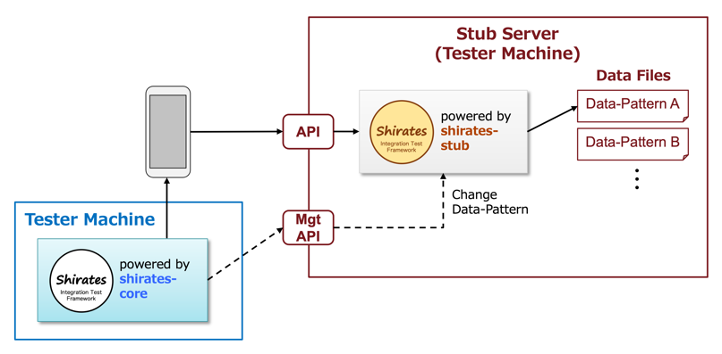
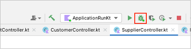
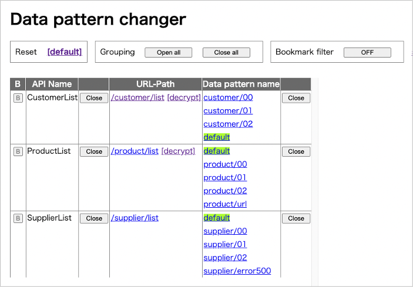

Using shirates-stub
You can use shirates-stub that provides fake api for testing. You can also change data pattern setting of stub server dinamically using management APIs.

Functions
| function | description |
|---|---|
| resetDataPattern | Reset data pattern |
| dataPattern | Set data pattern |
| getDataPattern | Get data pattern |
Setting up shirates-stub
See shirates-stub.
Starting shirates-stub
- Open shirates-stub project in IntelliJ IDEA.
- Select
ApplicationRunKtand clickDebug.

- You can see log in console. Click http://stub1/
- Click
Data pattern changer. - Data pattern changer is shown.

Example
- Open your test project.
- Set
stubServerUrlin testConfig file.
"stubServerUrl": "http://stub1",
stubExampleConfig.json
{
"testConfigName": "stubExampleConfig",
"stubServerUrl": "http://stub1",
"appIconName": "Settings",
"packageOrBundleId": "com.android.settings",
"startupPackageOrBundleId": "com.android.settings",
"startupActivity": "com.android.settings.Settings",
"capabilities": {
"language": "en",
"locale": "US"
},
"profiles": [
{
"profileName": "Android 12",
"capabilities": {
}
}
]
}
Instead of using testConfig.json file, you can set stubServerUrl in testrun file.
## Stub --------------------
stubServerUrl=http://stub1
- Create test code using functions for changing data pattern.
StubProxy1.kt
@Testrun("testConfig/android/stubExample/testrun.properties")
class StubProxy1 : UITest() {
@Test
@Order(10)
fun stubProxy1() {
scenario {
case(1) {
condition {
stubNot {
SKIP_SCENARIO("Stub required.")
}
resetDataPattern()
}.expectation {
getDataPattern("CustomerList")
.stringIs("default")
}
}
case(2) {
condition {
dataPattern("CustomerList", "customer/01")
}.expectation {
getDataPattern("CustomerList")
.stringIs("customer/01")
}
}
}
}
}
- Run shirates-stub.
- Run test code. You can see output in console like this.
Console output (shirates-core)
...
104 2022/04/27 02:28:01.881 {} [info] () Running scenario ..................................................
105 2022/04/27 02:28:01.881 {} [info] () Startup package: com.android.settings
106 2022/04/27 02:28:01.882 {stubProxy1} [SCENARIO] (scenario) stubProxy1()
107 2022/04/27 02:28:01.882 {stubProxy1-1} [CASE] (case) (1)
108 2022/04/27 02:28:01.882 {stubProxy1-1} [CONDITION] (condition) condition
109 2022/04/27 02:28:02.386 {stubProxy1-1} [operate] (resetDataPattern) Resetting data pattern.
110 2022/04/27 02:28:02.446 {stubProxy1-1} [EXPECTATION] (expectation) expectation
111 2022/04/27 02:28:02.457 {stubProxy1-1} [OK] (stringIs) "default" is "default"
112 2022/04/27 02:28:02.457 {stubProxy1-2} [CASE] (case) (2)
113 2022/04/27 02:28:02.457 {stubProxy1-2} [CONDITION] (condition) condition
114 2022/04/27 02:28:02.457 {stubProxy1-2} [operate] (dataPattern) Setting data pattern. (CustomerList=customer/01)
115 2022/04/27 02:28:02.462 {stubProxy1-2} [EXPECTATION] (expectation) expectation
116 2022/04/27 02:28:02.464 {stubProxy1-2} [OK] (stringIs) "customer/01" is "customer/01"
117 2022/04/27 02:28:02.464 {stubProxy1-2} [info] () test finished.
...
Console output (shirates-stub)
...
lineNo logDateTime [logType] <threadId> apiName {dataPattern} elapsed(ms) message
22 2022/04/27 02:28:02.426 [INFO] <29> resetStubDataManager(API) {} - GET http://stub1/management/resetStubDataManager
23 2022/04/27 02:28:02.432 [INFO] <29> - {} - Setting urlPath -> dataPatternName
24 2022/04/27 02:28:02.434 [INFO] <29> - {} - "/customer/list" -> "default"
25 2022/04/27 02:28:02.435 [INFO] <29> - {} - "/product/list" -> "default"
26 2022/04/27 02:28:02.436 [INFO] <29> - {} - "/supplier/list" -> "default"
27 2022/04/27 02:28:02.448 [INFO] <30> getDataPattern(API) {} - GET http://stub1/management/getDataPattern?apiName=CustomerList
28 2022/04/27 02:28:02.459 [INFO] <31> setDataPattern(API) {} - GET http://stub1/management/setDataPattern?apiName=CustomerList&dataPatternName=customer/01
29 2022/04/27 02:28:02.461 [INFO] <31> - {} - "/customer/list" -> "customer/01"
30 2022/04/27 02:28:02.463 [INFO] <32> getDataPattern(API) {} - GET http://stub1/management/getDataPattern?apiName=CustomerList
...